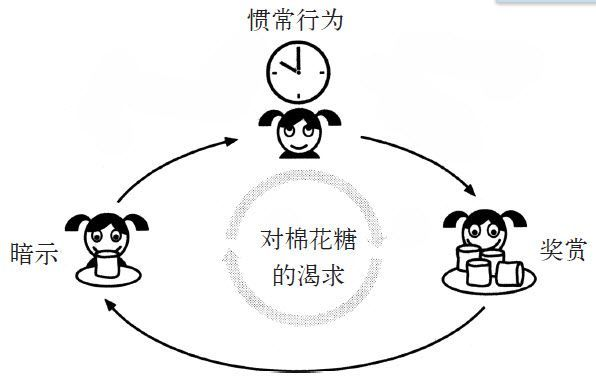
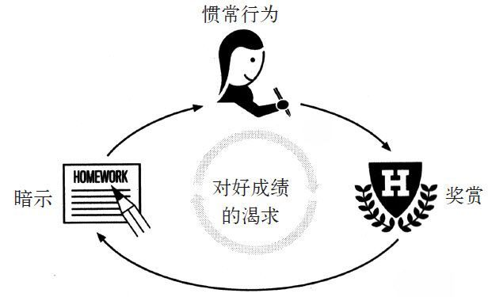
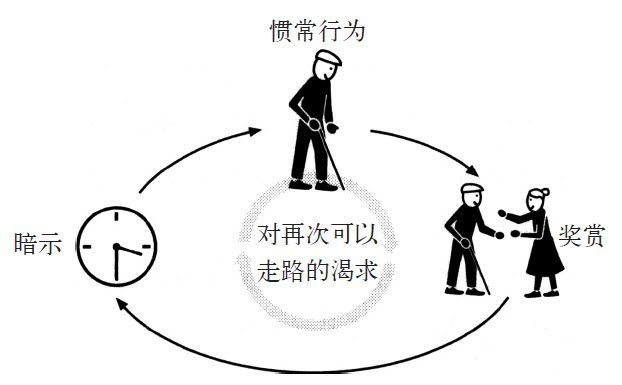
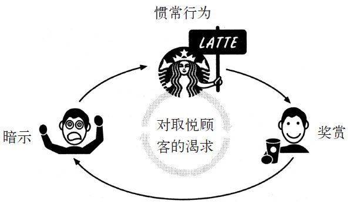

第一次目睹父亲吸毒过量的时候，特拉维斯·里奇只有9岁。那时他们全家刚刚搬到巷尾的一间小公寓里。频繁的迁居似乎永不停息。收到搬迁通知后，他们不得不把家里的用品收在黑色的垃圾袋子里，在深更半夜离开旧居。房东总说，太多人在深夜来来往往，会产生太多的噪音。
有时候，当特拉维斯放学回到家里，会看到房间收拾得一尘不染，剩菜规规矩矩地包好放在冰箱里，辣酱和番茄酱也井然有序地放在家用塑料盒中。他就知道，这意味着父母暂时抵制住了海洛因的诱惑，在轻度的狂热中度过了平静的一天。但这种情况通常都不会有什么好结果。相较之下，特拉维斯更喜欢乱糟糟的房间，还有眯着眼睛倒在沙发上看卡通片的父母。他们吞云吐雾之后倒是通常不会有什么大乱子。
特拉维斯的父亲曾经是一位热衷烹饪的绅士，除了在海军服役那段时间，这辈子基本上都待在他父母所在的加州洛迪，活动范围从来都不超过房屋周围几英里。在搬入巷尾公寓的时候，特拉维斯的母亲正因藏匿海洛因和卖淫在监狱服刑。基本上，他的父母属于功能性成瘾者，家庭生活看上去倒也风平浪静。他们每个夏天都去野营，逢大多数周五还会参加哥哥姐姐的垒球比赛。当特拉维斯4岁的时候，他和父亲去了迪士尼乐园，一位工作人员还替他拍了有生以来的第一张照片。他们自己的相机早在几年前就卖给典当行了。
在父亲吸食毒品过量的那天早上，特拉维斯正在客厅地板的毛毯上和哥哥玩耍，这毛毯是每天晚上铺来睡觉用的。特拉维斯的父亲一边走进浴室一边盘算着做一些薄煎饼。他随身带着的短筒袜里装着针筒、勺子、打火机和药棉签。几分钟之后，他走出浴室，打开冰箱取鸡蛋，然后就瘫倒在了地板上。当孩子们赶来时，他们的父亲正在地板上抽搐，面无血色。
特拉维斯的哥哥姐姐曾经遇到过这种情况，知道如何应付。哥哥把父亲的身体放平，姐姐掰开父亲的嘴以防他窒息，并让特拉维斯跑到隔壁，向邻居借电话拨打了911。
“我叫特拉维斯，我爸爸失去知觉了，我们也不知道是怎么回事，他已经停止呼吸了。”特拉维斯向警方接线员撒了谎。即使只有9岁，特拉维斯也知道父亲忽然失去意识的原因，但他不想在邻居面前说实话。三年前，父亲的一位朋友在给自己打了一针之后死在了地下室里。护理人员运走尸体的时候，邻居们都静静地凝望着为救护轮床开着门的特拉维斯和姐姐。其中一位邻居的外甥和特拉维斯是同班同学，这件事很快就传遍了学校。
挂掉电话之后，特拉维斯走到巷尾等救护车。他的父亲早上在医院接受治疗，下午在警察局接受指控，晚餐时间他赶回了家，还做了意大利面。几周之后，特拉维斯10岁了。
特拉维斯16岁的时候从高中辍学了。“我再也受不了别人叫我同性恋了，”他说道，“受不了别人尾随我回家，受不了别人丢东西打我。这种感觉太沉重了。离开这里远走他乡都要感觉轻松得多。”他搬到了向南两小时车程的弗雷斯诺市，在一家洗车店找了份工作，后来因违背老板的命令而遭到解雇。他也在麦当劳和好莱坞影碟店找过工作，但每当顾客态度蛮横的时候（“我要的是沙拉酱，你个蠢货”），他就会失去理智。
“从我的取餐窗口滚开！”他向一名女士咆哮着。在他的经理费力地将他拉到里间之前，他还在不停地把鸡块丢向女士的汽车。
有时候他会过于沮丧，以至于在换班的过程中放声大哭。他总是迟到，毫无缘由地请假。早上，他会大声呵斥镜子中的自己，命令自己要更加努力，打碎了牙齿也要吞到肚子里。但他就是和别人合不来，受不了一点点的批评和侮辱。当他的窗口队伍排得太长的时候，经理就会大声呵斥他，他的双手就开始不住地颤抖，感到上气不接下气。面对生活的时候，他是那么软弱无力，他怀疑父母就是有了这些感受才开始接触毒品的。
一天，在好莱坞影碟店，一个对特拉维斯有些了解的熟客建议他到星巴克工作。“我们在华盛顿堡开了一家新店，我将担任副经理，”他说，“你应该去试试。”
一个月后，特拉维斯就成了星巴克的早班服务生。
那是6年前的事儿了。现在，25岁的特拉维斯手下有40名员工，已经是两家年收入超过200万的星巴克门店的经理了。他的薪酬是44 000美元，享受401（k）计划，而且无债一身轻。他上班再也没迟到过，工作时心情也不再忐忑。当他的一位女性雇员因为客户的呵斥而痛哭的时候，特拉维斯将她拉到了一边。
“你的围裙就是一面盾牌，”他对她说，“没人能伤害到你。你想变得多坚强，你就会有多坚强。”他在任职之初就参与了星巴克的一项贯穿员工职业生涯的培训课程，在一次培训课上，他听到了上述那句话。这项培训计划经过了严密而充分的规划，如果他完成所有模块的培训，就等于获得了大学学分。特拉维斯说，这个培训改变了他的一生。星巴克教会了他如何生活，如何集中精力，如何按时上班，如何控制自己的情绪。最关键的是，星巴克传授给了他意志的力量。
他告诉我说：“星巴克的工作经历是我一生中发生的最重要的事情，公司重塑了我的人生。
对于特拉维斯和千千万万的其他员工，星巴克像其他很多公司一样，在传授员工生活技能方面取得了卓然成效，而这些技能正是学校、家庭和社会未能提供的。如今，星巴克拥有137 000名员工和数逾百万的会员，从某种意义上讲，已经成为了全美最大的教育机构之一。在入职第一年，星巴克的所有员工都会获得不少于50小时的课堂培训时间，并且还要花费更多的时间在家中学习工作手册，与委派的专属导师进行交流。
星巴克教育的核心紧紧围绕着一项重要的习惯，就是意志力。大量研究表明，意志力是引导个人走向成功最关键的阶梯。在2005年的一次研究中，宾夕法尼亚大学的研究员选取了164名八年级生作为样本，测量了他们的智商和其他因素，其中包括通过自律性测验得到的意志力程度。
意志力水平较高的学生在学习中会获得更高的成绩，在择校方面具有更高的优势。他们通常不会缺课，会花更多时间来做功课、更少的时间看电视。“相较于那些易冲动的同龄人，自律性强的青年人在学习表现变量上会获得高分。”研究员记录道，“相比于智商，自律性能更好地预测学生的学习表现。经过一学年的学习，哪位学生的成绩会有提高，通过自律性可以预测出结果，而智商就达不到这一点……相比于智商，自律性会对学生的学习表现有更大的影响。”
研究还表明，提升意志力来帮助学生的最佳途径，就是把锻炼意志力培养成一种习惯。“有的时候自制力强的人看上去工作并不努力，但实际上他们已经把意志力变成了一种自发意识，”宾夕法尼亚大学的研究员，安吉拉·杜科蒙解释道，“已经不用去刻意激发他们的意志力了。”
对于星巴克来说，意志力的作用更甚于对学习的好奇心。在20世纪90年代末期，当星巴克开始规划大规模增长战略蓝图的时候，行政部门就认识到企业的成功需要一种经营环境，在这样的环境下，一杯美味的咖啡价值4美元也是合情合理的。企业就需要训练员工在提供拿铁咖啡和司康饼的同时，向顾客传递一些快乐。所以早在初期，星巴克就开始研究如何指导员工调节自己的情绪，管理自律性，从而在提供各项服务的时候给人一种积极向上的感觉。除非服务生能将个人问题孤立于工作之外，否则有些员工的情绪会不可避免地大量掺杂到对待顾客的态度中。然而，如果雇员懂得如何保持精神的集中和自律，即使是在8小时轮班的最后一刻，他们也能一如既往地提供星巴克顾客所需要的更高级别的餐饮服务。
星巴克已经支付了数百万美元用以开发员工的自律培训课程。实际上，公司行政部门也编撰了工作手册以指导员工在生活中将对意志力的锻炼培养成一种良好的习惯。部分说来，正是这些课程促使星巴克由一家一蹶不振的西雅图企业，发展为一个拥有17 000家连锁店、年收入超过100亿美元的餐饮界巨擘。
那么星巴克是如何完成这一壮举的呢？它又是如何接受像特拉维斯这样的员工，这样一个瘾君子的儿子，一个高中辍学者，一个无法控制自己、无法安安分分地在麦当劳继续工作的人，并且还放心地让其监管数十名员工和上万美元的月收入？到底特拉维斯在这里学到了什么？
每一位踏入坐落于凯斯西储大学的这间实验室的人都会达成一个共识：这里的饼干香气扑鼻。新鲜出炉的饼干在碗里码得满满的，上面铺着一层巧克力屑。在饼干旁边，桌上还有一碗胡萝卜。一整天下来，饥肠辘辘的学生走进实验室，在这两碗食物面前坐下，不知不觉地参与进一项意志力的测试，而这场测试将颠覆我们以往对于自律性工作机制的认识。
在那个时候，有关意志力的学术研究较现在而言还是一片空白。心理学家认为这个研究主题只是他们所说的“自我调节”的不同方面而已，还不是一个足以引起学术界好奇的领域。
在20世纪60年代，斯坦福大学的科学家曾经在4岁幼童身上做过一个著名的意志力实验。这些幼童被带到一个有精心挑选出的糖果（包括棉花糖在内）的房间。幼童们被告知如下规则：他们可以马上吃掉一个棉花糖，或者稍等几分钟，然后吃掉两个棉花糖。
之后研究人员就离开了房间。一些幼童受不了糖果的诱惑，在大人离开房间的同时就吃了一个棉花糖。30%的幼童抵制住了吃的欲望，在15分钟后研究人员返回房间时吃了双份。一直在双向镜后面仔细观察的科学家们对那些自制力较强的获得了第二个棉花糖的幼童作了细致的跟踪记录。
几年后，研究人员追踪到了当年实验的参与者。现在他们都已经上了高中。研究人员询问了他们的成绩、SAT考试分数、维持友谊的能力和“处理某些重要问题”的能力，继而发现当年抵制糖果诱惑时间最长的4岁幼童，拥有最高的平时成绩，并且SAT考试分数高出其他实验参与者的平均成绩210分。他们在朋友之间更受欢迎，而且更少接触毒品。看起来，如果一个学龄前幼童能抵御住棉花糖的诱惑，在长大后就会按时上学，认真完成作业，交到更多的朋友，在面对同龄人的压力时表现得更加游刃有余。似乎那些抵御住棉花糖诱惑的孩子所拥有的自我约束能力，让他们受益一生。
科学家们开始进行相关的实验，试图寻找出帮助孩子们提高自我调节能力的途径。他们发现教授孩子们一些简单的技巧，如通过绘画来分散注意力，或者在想象中为棉花糖加上一个边框，使它更像一张照片而非充满诱惑的糖果，可以帮助他们培养自我控制能力。到了20世纪80年代，一个被普遍接受的理论浮出水面：意志力是一种可以通过学习掌握的技能，正如同做数学题和说“谢谢你”一样，是可以教授的。但该理论的研究经费依旧紧缺。意志力这个课题在当时并不热门，许多斯坦福大学的科学家都开始转向其他领域的研究了。然而当包括马克·姆拉文在内的凯斯西储大学的博士生回溯20世纪90年代中期的研究时，他们开始提出一些以往的研究没有解决的问题。对姆拉文来说，“意志力是可习得技能”这一模型并不是一个令人信服的解释。毕竟，一项技能应该孤立于时间的推移而保持恒定。如果你在周三的时候掌握了做煎蛋卷的技术，周五的时候应该依然可以如法炮制。


但是，就姆拉文的个人经验来说，意志力并不是每时每刻都能显露出来的。有时晚上下班回家之后，他愿意进行一段慢跑。但在其他日子里，他可能只想赖在沙发上看电视而不想起身，就如同他的大脑或者至少是支配他参加运动的那一部分大脑忘记了该如何唤醒意志力，迫使自己出门运动。有时，他能保持均衡的饮食。但在感到疲乏的时候，他又会去自动贩卖机把东西买个精光，把自己淹没在糖果堆里。
姆拉文觉得，如果意志力是一项技能，为什么它不能维持一个恒定的状态？他怀疑意志力还有更多之前的实验没能揭示出的谜团。但是这个假设如何在实验室中得到验证呢？
姆拉文的解决方案是，在一间实验室中放置一碗新鲜出炉的饼干和一碗胡萝卜。这间实验室里只有一张桌子，一把木质椅子，一个手铃和一个烤箱，基本上就是一个装着双向镜的大柜子。67名大学生在饿了一顿之后参与到实验当中，一个接一个地坐在这两个碗面前。
“本次试验的目的是测试你们的味觉。”一位研究人员对大学生们撒着谎。实际上，实验的目的是迫使一部分学生发挥出自己的意志力。基于此目的，研究人员要求一半学生吃饼干而忽视胡萝卜，另一半学生吃胡萝卜而忽视饼干。根据姆拉文的理论，想要忽视饼干是很难的，因为这需要动用意志的力量。而忽视胡萝卜基本不需要做出什么努力。
“记住，”研究人员说道，“只许吃分配给你们的食物。”然后她离开了实验室。
研究人员离开后，学生们就开始大嚼起来。吃饼干的如沐春风，吃胡萝卜的则一脸苦相，强迫自己忽视眼前香喷喷的饼干简直就是一种煎熬。透过双向镜，研究人员注意到一名应该吃胡萝卜的学生捡起一块饼干，深深地闻了一会儿，又放回碗里。另一位捏起了几块饼干又放下，然后开始吮吸粘在指尖的巧克力浆。
5分钟之后，研究人员返回房间。正如姆拉文的推断，被安排吃胡萝卜的学生强迫自己吞咽这种蔬菜、忽视甜品的诱惑，已经充分动用了他们的意志力；而被安排吃饼干的学生基本上不需要自律。“我们必须再等待15分钟，让你们对食物的感觉记忆淡化消失。”研究人员对各参与者说道。在等待期间，她要求大学生们参与一个谜题游戏。看上去相当简单：一笔画出一个几何图形，同样的路径不能画两次。如果有人想退出的话，只需要摇一下手铃。她还暗示说，解决这个谜题不会花太久时间。实际上，这个谜题是无解的。
这个谜题不是消磨时间的游戏，而是实验最重要的部分。它需要参与者调动大量的意志力，尤其是当一次次的尝试均宣告失败的时候更是如此。研究人员需要了解的是：是否那些在忽视饼干的环节中消耗大量意志力的参与者会很快退出游戏？换句话来说，意志力究竟是不是一种有限的资源？
研究人员在双向镜后静静地观察着。那些之前没有动用过自律性的吃饼干的学生开始研究谜题。大体上，他们看上去还是相当轻松的。其中一个学生尝试了一种简单的方法，碰了钉子之后重新来过，如此反反复复。有些学生在研究员叫停之前已经尝试了半个小时。平均下来，在摇动手铃之前，每位吃饼干的学生都花了大概19分钟的时间去解决谜题。
而那些意志力已趋枯竭的被安排吃胡萝卜的学生表现得则大相径庭。他们一边解谜，一边嘟嘟囔囔。一种受挫的情绪在他们之间蔓延。有一个参与者抱怨说整个实验就是在浪费时间。有些人直接趴在桌子上闭上了眼睛。还有一位参与者在研究人员返回房间的时候对她出言不逊。平均下来，吃胡萝卜的学生只坚持了8分钟就退出了，比吃饼干的学生坚持的时间短了60%。事后，当研究员们询问他们的感受时，一位吃胡萝卜的人说他已经“受不了这么弱智的试验了”。
“由于之前消耗了一些意志力去抵御饼干的诱惑，那些人就成了容易退出的阵营当中的一员。”姆拉文向我解释道，“从那次试验之后，我们又作了超过200次的研究，结论都是相同的。意志力不是一种技能，而是一种力量，就如同你手臂和大腿中肌肉的力量，用力过猛会感到疲累，肌肉剩余的力量就不足以供给其他活动。”
研究人员基于这个发现，对各种现象做出了解释。一些人提出这个发现阐明了成功人士会抵受不住婚外情诱惑的原因（因为他们在漫长的白天过多使用了意志力，这就解释了为什么婚外情大多在晚上发生），解释了为什么一些优秀的医师会犯低级的医疗错误（这些错误通常发生在医生完成一项需要精神高度集中的任务之后）。姆拉文向我解释道：“如果你想完成一些需要意志力支持的事情，例如在工作后跑步，在白天就应该着意节省意志的力量。
“如果你过早地在写邮件或者填写复杂单调的费用表等乏味的工作中耗尽了你的意志力，你回家的时候就会感到筋疲力尽。”
这样的类比究竟还能举出多少？我们是否可以像举哑铃锻炼二头肌那样使我们的意志力更强大呢？
2006年，梅根·欧顿和肯·成这两位澳大利亚研究人员试图通过创立一种意志锻炼来解决这个问题。他们征召了24位年龄在18岁到50岁之间的志愿者投入一项体育锻炼计划，在两个多月的时间里，让他们接受运动量逐渐增加的举重、抗阻训练和有氧活动等。一周又一周，他们不断增加锻炼的频率，这样他们每次到健身房都要消耗更多的意志力。
两个月后，研究人员通过观察参与者日常锻炼之外的生活状况，来确定在体育锻炼中增长的意志力是否能够提高日常生活中的意志力。在实验开始前，多数参与者表明自己生活懒散。当然，现在他们的身体状况好多了。不仅如此，他们在生活的其他方面也变得更加健康。参与者在体育锻炼上花费的时间越长，用来吸烟、饮酒、喝咖啡、吃垃圾食品的时间就越短，而且会多干家务、少看电视，心情也舒畅起来。但欧顿和成怀疑这个结果和意志力的提高没什么关系。万一是体育锻炼本身就能使人精神愉悦、健康饮食呢？
所以他们又设计了另一个实验。这次他们和29位参与者签约，向后者提供为期4个月的理财方案。研究员设立了储蓄目标，并且要求参与者拒绝奢侈的花费，例如不在餐厅吃饭、不去电影院看电影等。参与者要对每一项消费进行详尽的记录。虽然刚开始很烦琐，但最终人们的自律性都被调动起来，自发地记录每一笔支出。
通过遵循理财方案，参与者的财政状况都有了好转。更让人想不到的是，参与者们吸烟、饮酒、喝咖啡的强度也下降了，平均下来，每人每天少喝两杯咖啡、两杯啤酒，烟民每天也少抽了15支烟。
他们限制垃圾食品的摄入，在工作学习的时候也更有效率。这就像体育锻炼研究中所说的，如果人们在生活的某一方面加强了自己的意志力量，比如体育运动和理财项目，那么这种力量会进入到他们的饮食习惯和工作中。一旦意志力得到加强，它就会延伸到生活的方方面面。
欧顿和成又做了另一个实验。这次他们征集了45名学生参与到一项关于建立学习习惯的教学改进方案中。根据预测，参与者的学习能力会有所提高，而且他们吸烟、饮酒、看电视的时间都会缩短，会参加更多的体育锻炼，饮食也会更加健康，甚至一些方案中没有提到的方面都会有所改善。和之前一样，随着参与者意志力量的不断加强，良好的习惯也开始渗透到生活的其他方面。
来自达特茅斯学院的致力于意志力研究的学者托德·希瑟顿说：“当你学会强迫自己参与体育锻炼，或者开始做家庭作业，只吃沙拉不吃汉堡的时候，你的思维正在改变。当学会控制自己的冲动时，人们就在进步。他们将学会如何在诱惑面前分散注意力。而且一旦你形成了意志力锻炼的习惯，你的大脑就会驾轻就熟地帮助你专注于你的目标。”
现在从事意志力研究的学者大概有数百名，分散于各一流大学。费城、西雅图、纽约等地的公立和特许学校已经联袂将意志力强化加入到课程安排中。在KIPP（“知识就是力量项目”，即一些特许学校对全国范围内的低收入家庭学生提供服务的项目）大学中，自制力的传授已经成为学校理念的重要组成部分（费城的一家KIPP学校还为学生提供印有“忍住别吃棉花糖”字样的衬衫）。
许多KIPP大学已经大幅度地提高了学生的考试成绩。
“这就说明了为什么强迫孩子上钢琴课、参加体育锻炼是非常重要的选择。我们的目的不是培养一位优秀的音乐家或者足球神童，”希瑟顿说道，“当你学会强迫自己练琴一小时或长跑15圈的时候，你就已经开始培养自我约束的力量了，一个能跟着球跑10分钟的5岁幼童长大后，一定能是一个按时做功课的六年级学生。”
意志力研究成为科学报道和新闻采访新宠的同时，这些理念也开始浸润整个美国。一些类似于星巴克的公司（如盖普、沃尔玛）,一些餐饮业企业，以及那些主要依赖基层员工的公司，都面临着同一个重大问题：无论员工在工作中有多强烈的表现欲望，最终都会因缺少自律精神而半途而废：他们上班迟到，和粗鲁的顾客唇枪舌剑地争吵，注意力不集中，上班时喜欢看热闹，甚至莫名其妙地辞职。
副经理克里斯廷负责监督公司的员工培训计划十多年了，她解释道：“对很多员工来说，星巴克给他们上了专业经验的第一堂课。在你的一生中，你的父母或老师总会告诉你该做什么，但突然之间，你的顾客对你大喊大叫，你的老板又分身乏术，不能亲自指导，你肯定会觉得无所适从。很多人无法顺利完成这个过渡。自律的精神不在高中的授课范围内，而这就是我们要传授给员工的。”
但正当星巴克这样的公司尝试把胡萝卜和饼干的研究成果运用到公司中时，新的问题出现了。他们拨款资助员工参加减肥课，并且提供了免费的健身房会员资格，满怀希望地期待员工在服务客户的过程中有卓越的表现。但员工的反响并不热烈，纷纷抱怨在一天的繁重工作之后根本没精力再去听课、做运动。“如果员工在工作中就很难自律，那么在工作后也很难参与到强化自律精神的计划当中去。”姆拉文说道。
但是星巴克打定主意要解决这个问题。2007年在星巴克扩展业务的高峰期时，公司每天开设7家新店，每周雇用1 500名新员工，并在顾客服务方面加强培养，例如按时上班，不能和顾客生气，而且要一直微笑服务，牢记顾客的订单甚至姓名，这些都是必须做到的。顾客需要的不仅仅是一杯昂贵的拿铁咖啡，而是与众不同的服务。星巴克前总裁霍华德·比哈尔向我解释道：“我们不是做咖啡生意，我们的生意是服务于客户的。我们的营业模式建立在非凡的服务体验上。如果服务跟不上，我们就完了。”
星巴克发现的解决方法，就是将自律精神转化成一个企业的习惯。
1992年，一名英国心理学家走进了苏格兰两家最繁忙的外科整形医院，并征集了60名病人参与一项实验。有些人对变化极其抵制，而她希望通过实验找到激发这些人意志力的途径。
这些病人平均年龄68岁，大多数没有高中以上学历，年收入低于1万美元。所有病人都在最近接受了髋关节或膝关节置换手术，而由于他们较为贫穷，受教育程度低，不少人等了好多年才得到手术机会。他们之中有离退休人员，有上年纪的机械师，还有库管员。因为他们都到了晚年，大部分人都丧失了对新生活的向往。
在髋关节或膝关节手术的康复过程中，病人必须谨小慎微，因为在手术中关节肌肉曾被切断、骨骼曾被锯开。在恢复过程中，即便是换床或舒活关节这样最细微的动作，都有可能带来难以忍受的苦楚。但是，手术的恢复要求病人在苏醒之后即开始锻炼。病人必须在肌肉、皮肤愈合，疤痕组织阻塞关节破坏身体灵活性之前，活动双腿和髋部。另外，如果病人不及时锻炼，就会面临着血栓的危险。但是由于这种痛楚过于强烈，病人尤其是上了年纪的病人一般会违背医嘱，拒绝作康复性锻炼。
苏格兰这项研究的参与者正是那些最可能在康复阶段遭遇失败的病人。这位心理学家试图通过这个研究来判断是否可以帮助这些病人重振意志。在病人手术结束后，她发给每人一本列有详细康复锻炼计划表的小册子，后面还有13页附录，一周用一页。每页附录都印着说明：“这周的目标是_____。请写下你的详细计划。例如，如果这周你准备出去散步，就在空白处写下你散步的时间和地点。”心理学家要求所有病人在空白处填写具体的计划。然后，她将填写计划的病人和拒绝填写计划的病人的康复记录进行了对比。
仅仅通过提供病人几页纸就能改变病人康复的速度，这听上去似乎有点滑稽。但三个月后，当心理学家探访病人时，两组病人之间出现了显著的差别。那些在小册子上填写计划的病人走路的速度比拒绝填写的病人快一倍。他们不需要任何人的帮助，在椅子上坐下、起身的速度大概是没填写计划的病人的三倍。他们可以自己穿鞋、洗衣服、煮饭，这些活动都比拒绝填写目标的病人快许多。
心理学家想要查明原因。她检查了那些册子，发现多数附页上都写着详细的计划，详细记录了康复阶段中的每一个细节。例如，有一位病人写道：“明天妻子下班的时候，我要步行到公共汽车站去接她。”然后又记录了他出发的时间，选择的路线，装束，下雨时该携带的物品，以及为了抵御阵痛所需的药片。在类似研究中的另一位病人为每次在去卫生间的路上所做的运动列出了一系列详细的时间表。第三位病人甚至列出了在街区散步时每一分钟的行程。
在心理学家研究病人的小册子时，她发现许多病人的计划有一个共同点：都集中记录了该如何应付在特定时间预期而至的疼痛。例如那位在洗手间路上进行锻炼的病人，他知道自己每次从沙发上起身的时候，疼痛就会变得剧烈，因此他列出了自己的解决方法：首先积极地迈出第一步，这样就不会因为惧怕疼痛而再次跌坐下来。那位与妻子在公共汽车站相会的病人厌恶下午的到来，因为每逢下午，散步的那段路就会变得无比漫长，也让他疼痛难忍。所以他会详细列出路上可能会遭遇到的障碍，并提前找到解决方案。
换句话说，这些病人最坚定的计划都围绕着他们疼痛出现的关键点，也就是为半途而废的诱惑的出现点而规划的。病人们需要告诫自己如何才能渡过难关。
直观上来说，每位病人都采用了克劳德·霍普金斯出售白速得牙膏时的规则。他们都辨识出了简单的暗示和明显的奖赏。例如，对那位与妻子在公共汽车站相会的病人来说，简单的暗示就是3点半了，老婆就在回家的路上！同时他也清晰地定义了奖赏：宝贝儿，我在这儿！在散步过程中，当半途而废的诱惑出现时，这位病人可以轻易地忽视它，因为自律已经形成了一种习惯。按理说，其他没有写下康复计划的病人没有理由不这样做。因为在医院，所有病人都接受了相同的训诫和警告，所有病人都知道体育锻炼对于康复的重要性，所有人都为康复治疗花了几周的时间。

而那些没有写出康复计划的病人则处于极大的劣势之中，因为他们没有考虑到疼痛来袭时的应对措施。他们从没有刻意地规划过锻炼意志力的习惯。即便他们准备在街区散散步，其决心也会在刚迈出几步时，因遭遇到难以忍受的疼痛而土崩
瓦解。
星巴克试图通过体育锻炼和减肥课程激发员工意志力的计划在实施过程中举步维艰，行政部门需要采取一些新手段。他们开始密切观察在店内发生的一举一动。他们发现，正如那些苏格兰病人一样，员工在遭遇“疼痛”诱惑点时，往往会半途而废。他们需要的是一种能更容易聚集自律性的既成习惯。
从某些方面来说，行政部门认为之前自己对于意志力的认识都存在谬误。结果显示，有意志力缺陷的员工在完成工作时基本不存在什么困难。一般情况下，意志力较弱的员工的工作表现和其他员工没有什么差别。但有的时候，尤其是面对突如其来的压力或不确定性时，这些员工会骂骂咧咧，自我控制力也会瞬间瓦解。例如，当一位顾客开始不满地叫喊时，即使一位在通常状况下十分冷静的员工也不能安之若素。而一个喧嚣躁动的顾客群可能会使服务生彻底崩溃，眼泪欲滴。
这些员工真正需要的是一套行之有效的方案，能解决让他们半途而废的各种“诱惑”，这套方案应该类似于苏格兰病人用来记录行为的小册子：当意志力疲劳时应遵循的一套惯常行为。因此公司开发了新的培训材料，上面详细阐明了员工遭遇困扰时的惯常解决方法。手册中针对如尖叫的顾客或拥挤在收银台前的长队这样特定的暗示来为员工提供相应的指引。经理们开始用角色扮演训练员工，直到所有的应对行动都变成自发行为。公司同时也找来一些如顾客满怀感谢的表情或来自经理的赞扬认可这样的奖赏，作为员工工作出色的证明。星巴克通过培养员工形成意志力习惯回路，来帮助员工应对逆境。
例如，当特拉维斯刚进入星巴克时，他的经理就立刻向他介绍了这种习惯。“最棘手的挑战就是面对一位发火的顾客，”经理告诉他，“如果你为客人上错了饮料，客人开始大喊大叫，你的第一反应应该是什么？”
“我不知道，”特拉维斯坦白道，“我猜我可能会有点儿害怕，或者生气。”
“这很正常，”经理说，“就算面对重重压力，我们的工作依然是提供最舒适的服务。”经理打开星巴克员工手册，翻到几乎空白的一页，把最上面写的一行字念了出来：“当一位顾客情绪不佳时，我的计划是……”
“你可以先构想在工作中遭遇到的不愉快的情况，然后将应对方案记在这本手册中，”经理说道，“我们常用的方法之一称为拿铁方法。静静倾听顾客的要求，接受顾客的抱怨，用行动来解决问题，向他们致谢，然后耐心解释问题的原委。”

“我建议你花几分钟写下一个用以应对顾客发火的方案，就采用拿铁方法。然后我们可以试演一下。”
针对各种让人备感压力、导致人放弃坚持的诱惑拐点，星巴克为员工准备了很多相应的惯常解决方案。例如针对客户投诉有3W（可以理解为倾听并解释）制度，当营业火爆时有“联系、发现、响应”制度。还有一些约定俗成的习惯，来帮助员工区分单纯需要咖啡的顾客（即语速很快，略显不耐烦，频繁看表的顾客）和需要更多体贴服务的顾客（即能够说出其他服务生姓名的、有固定偏好饮品的顾客）。整个培训手册中有数十页的空白，以供员工记录克服重压诱惑拐点的方案。然后员工们一遍又一遍地按照其实践，最终将意志力转化成自发意识。
这就是意志力转化成习惯的过程：在困境发生之前想好解决措施，然后在困境来临时依法处理。当苏格兰的病人们填好手册，或特拉维斯参透了拿铁方法之后，他们就学会了如何对像身体的疼痛或顾客的怒气这样的既定暗示做出正确的反应。当暗示出现时，就能有条不紊地执行惯常反应。星巴克不是唯一一家用这种方法的公司。
以世界上最大的税收和金融服务公司德勤事务所为例，其员工都会接受一门名为“关键时刻”的课程。这项课程旨在教人如何应对让人放弃的诱惑拐点，比如客户抱怨收费问题、同事被开除或者德勤的咨询师犯了错误时，都会出现这种拐点。对所有这些时刻，都预先定好处理惯例，比如要耐心倾听，思考问题，不要说别人不会说的话，要遵循5/5/5规则，这对员工应该如何反应给出了指导。在康泰纳零售连锁店，员工第一年接受培训的时间就超过了185小时。培训师教他们要看到诸如生气的同事或拥挤的顾客这种拐点的出现，还要养成各种习惯，对于如何安抚顾客或调解冲突等；都要按照惯例进行。例如，当有顾客似乎觉得不知买什么时，员工就应该立刻请顾客想象打算怎样布置家里，描述一下当一切就位时自己有什么感觉。这家公司的CEO告诉记者：“曾经有顾客跟我们说，‘来这儿的感觉比去看我的精神科医生还要好’。”
从某些方面来说，将星巴克推向辉煌的霍华德·舒尔茨与特拉维斯并没有什么不同。舒尔茨在布鲁克林区的政府公房里长大，与父母和两个兄妹挤在一套两居室的公寓里。在他7岁时，父亲摔断了脚踝，丢掉了尿布运输司机的工作。这对于整个家庭来说无异于晴天霹雳。在脚踝痊愈后，父亲只能依靠一些低收入工作聊以糊口。
“我的父亲一直没有找到正确的路，”舒尔茨说道，“我看到他的自尊心一次次被伤害。我感觉他本来可以做成很多事的。”
舒尔茨就读的学校略显荒凉，孩子们在铺满沥青的操场上进行各种游戏：足球、篮球、棒球、排球等。如果一支队伍输掉比赛，再轮到他们上场就要一个小时以后了，所以舒尔茨想方设法、不计代价地让自己的队伍胜出。他回家时肘部和膝盖经常遍布血痕，母亲则用湿布为他温柔地擦拭伤口，鼓励他说：“不要放弃。”
他为自己赢得了大学的橄榄球奖学金（但他因颚骨受伤，再也没有参加过比赛），拿下了一个通信技术学位并成为纽约施乐公司的销售员。他每天起床后，要到市中心挑选一座新写字楼，搭乘电梯到达顶层，礼貌地挨家询问是否有人需要墨粉和复印机。然后搭乘电梯向下一层，周而复始。
在20世纪80年代早期，舒尔茨就职于一家塑料生产公司，他注意到，西雅图一家不知名的零售商订购了大量的咖啡滴漏。舒尔茨喜出望外，并深深地爱上了这家公司。两年后，当他听说星巴克将出售仅有的6家门店时，他立刻向认识的每一个人借钱，盘下了门店。
那还是1987年的事情。之后的三年内，星巴克门店增加到84家；6年内门店数量就超过了1 000家。现在，星巴克在50多个国家拥有17 000家门店。
为什么舒尔茨能从当时在操场上共同玩耍的孩子中脱颖而出？如今，他的许多老同学在布鲁克林当警察或消防员，还有一些进了监狱。舒尔茨却拥有超过十多亿美元的身家，被尊称为20世纪最成功的CEO之一。促使他摆脱贫穷成为富豪的决心，也就是意志力，是从哪里来的？
他对我说：“我自己也不清楚。我母亲常说，‘你将成为上大学的第一人，有一份体面的职业，光耀门第。’她总会问我这样一些问题，‘今晚的学习计划是什么？明天你准备做什么？你的考试准备好了吗？’这些问题促使我不断设定目标。”
“我真的很幸运，”他说，“而且我由衷地相信，如果你告诉别人他具备走向成功的条件，他就真的会成功。”
舒尔茨对于员工培训和客户服务的重视，使星巴克成为世界上最成功的企业之一。几年来，他亲自参与了公司运营的各个环节。2000年，星巴克开始陷入低迷期，疲惫不堪的舒尔茨将星巴克的日常运营交给了其他管理人员。在短短的几年内，对于饮品质量和客户服务的投诉越来越多，而管理人员却只着眼于市场的扩张而忽视了顾客的反应。员工的不满情绪也在高涨，调查显示，在顾客眼中，星巴克这个品牌已经和平庸的咖啡与虚假作态的服务画上了等号。
因此，2008年舒尔茨再次接回CEO一职。他的工作重点之一就是重新构建公司的培训计划以应对各种各样的问题，其中包括重新树立员工或“合作伙伴”（星巴克内部将员工称为伙伴）的意志力和自信心。舒尔茨对我说：“我们必须重新赢得客户和合作伙伴的信任。”
几乎就在同时，出现了新一波针对意志力的科研项目，不过与之前的研究相比稍微有些不同。研究人员发现，有些人像特拉维斯一样，在培养意志力习惯的时候会相对轻松一些，而其他人无论接受多少培训和支持都收效甚微。是什么原因导致了这样的差异？
当时已经是奥尔巴尼大学教授的马克·姆拉文设计了一个新实验。他安排大学生进入一个房间，房间中有一盘新鲜出炉的饼干，他要求学生们忽视那盘饼干。有一半学生受到了和蔼的对待。“我们希望你们不要去动那盘饼干，好不好？”一位研究人员柔声细语地说。然后她向学生们解释了实验的目的是要检测他们拒绝诱惑的能力，并向学生们贡献时间参与实验表示了谢意。“如果你们对实验的改进有什么想法和建议的话，可以通知我们。我们希望各位帮助我们让参与这种实验的人尽可能感到愉快。”
另外半数学生就没有受到这么周到的礼遇了。研究人员只是对他们单纯下命令。
“你们不能吃饼干。”研究人员冷冰冰地交代了一句。她既没有向学生们陈述实验的目标，也没有对学生和颜悦色，对学生们的反馈也不闻不问。她吩咐学生们按着指令做。“现在开始了。”她说道。
在研究人员离开房间后的5分钟内，两组学生开始努力忽视面前香喷喷的饼干。没有人向诱惑屈服。
然后研究人员返回房间。她要求每一位学生注视电脑屏幕。屏幕上每间隔500毫秒闪过一个数字，如果数字“6”后面紧跟着出现数字“4”，参与者就要敲一下空格键。关注一个闪烁的无意义数字序列和解答无解谜题一样，已经成为了测试意志力的标准方法。那些受到礼貌对待的学生们在计算机测试中完成得很好，一旦有数字“4”跟随着“6”闪烁出现，他们总能及时敲下空格键。在测试的20分钟内，他们总是能将注意力集中在屏幕上。看来在抵制饼干的诱惑之后，他们的意志力还有剩余。
为什么受到礼貌对待的学生具有更强的意志力呢？拉姆文在研究时发现，存在于两组参与者之间最关键的差异是他们在其中是否具有掌控感。“我们一次又一次地发现，”姆拉文向我解释说，“当被要求去做一些需要自我克制的事情时，如果参与者认为这是个选择或者因为可以帮助别人而让自己开心，那用到的意志力就会少很多。如果他们感到自己没有自主权，只是单纯地接受命令，他们意志力消耗的速度就会加快。”在这个例子中，学生都忽视了饼干，但当这些学生感觉自己被当成工具对待时，他们的意志力消耗得就会更快。
对于企业和组织来说，这个结论有巨大的意义。仅仅赋予员工一种有所掌控、拥有真正决策权的感觉，就可以使员工将更多精力和心思投入到工作中。举例来说，2010年，在俄亥俄州一家工厂进行过一次研究。研究中，受到观察的流水线工人被赋予了调整日程和工作环境的自由。他们可以自己设计工作服、决定轮班安排，其他条件则保持不变，生产的工序和薪酬分级也不作变更。在之后的两个月内，工厂的生产效率提高了20%。工人主动缩减了休息时间，犯的错误也越来越少。赋予员工多少支配感，员工就能在工作中表现出多少自律性。
在星巴克，这个结论依然成立。如今，星巴克正致力于为员工提供更多自主支配的机会。他们允许员工重新设计店里咖啡机和收银机的布局，允许员工决定欢迎客人的方式和商品的摆放位置。经理和员工在一起讨论搅拌机的摆放位置，这场面在其他公司里可不常见。
星巴克的副总裁克里斯·英格斯科夫谈道：“我们开始要求员工发挥才智和想象力，而不是命令他们‘把咖啡从箱子里取出来，把杯子放在这，一切按规定来’。人们想要掌控自己的人生。”
营业额下降了，但是客户满意度却上升了。舒尔茨回归后，星巴克的年收入提高了12亿美元。
在特拉维斯16岁，还没有从高中辍学进入星巴克工作的时候，他的母亲给他讲了一个故事。当时他们正开着车，特拉维斯问为什么自己没有更多的兄弟姐妹。他的母亲一直想在孩子们面前保持绝对的诚实，于是答道，在特拉维斯出生的两年前她也曾怀孕过，不过后来堕了胎。母亲解释说，因为那时他们已经有了两个孩子，而且已经染上了毒瘾。他们觉得养不起其他孩子了。在那一年之后，她怀了特拉维斯。她曾经考虑过再做一次流产，但又实在不忍心。还是顺其自然吧。于是特拉维斯出生了。
“她告诉我，她已经犯下了太多错，但坚持生下我是她一生做出的最正确的选择之一。”特拉维斯说，“如果你的父母身染毒瘾，那么在成长过程中你就不会相信他们会提供给你所需的一切。但幸运的是，我的老板为我在这方面填补了空白。如果我的母亲能像我一样幸运，她的人生可能就会完全不同了。”
就在那次对话的几年后，特拉维斯的父亲打电话来，告诉他说母亲手臂上的针孔受到感染，已经侵入到血液了。特拉维斯立刻驱车前往洛迪市的医院，但当他到达时，母亲已经失去意识。半小时后医院撤去了生命维持系统，母亲就这样去世了。
一周后，特拉维斯的父亲因肺炎住进了医院。他的肺已经烂光了。特拉维斯又开车回到了洛迪，他赶到急诊室时是晚上8点02分，护士不耐烦地告诉他探视时间已经过了，明天再来。
后来，对于当年的那一幕，特拉维斯想了很多。他那时还没能进入星巴克工作，还没有学习该如何控制自己的情绪，还没有花几年的时间去练习意志力的习惯。到如今，当他思考自己的生活时，他想到自己的生活曾经满是过量的毒品，家里的车道也老是摆着盗窃的汽车，去医院探视还碰到了很难打交道的护士，当时的那个世界和自己如今的生活相隔千里，他在想自己是如何在短时间内走到今天这一步的。
“如果他是在一年后去世的，一切都会变得不同。”特拉维斯对我说。那时候他可能知道该如何恳求护士，礼貌地请求她破例一次，他就有可能进去探视。然而他当时放弃了，离开了。“我说，‘我只是想进去跟他说说话’，然后护士说，‘他还昏迷着呢，现在探视时间已经过了，明天再来吧’，我就无话可说了。当时我有一种无能为力的感觉。”
当晚，特拉维斯的父亲去世了。
在每一年父亲的忌日，特拉维斯都会早早起床，认认真真地洗一个澡，详细地制订出一天的计划，然后开车去上班，从不迟到。